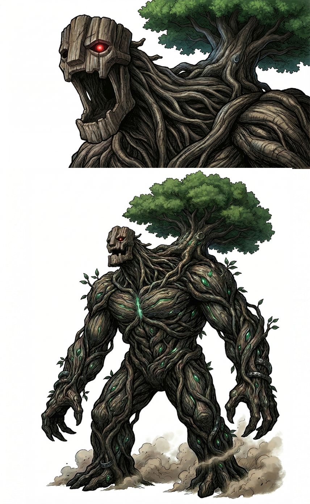
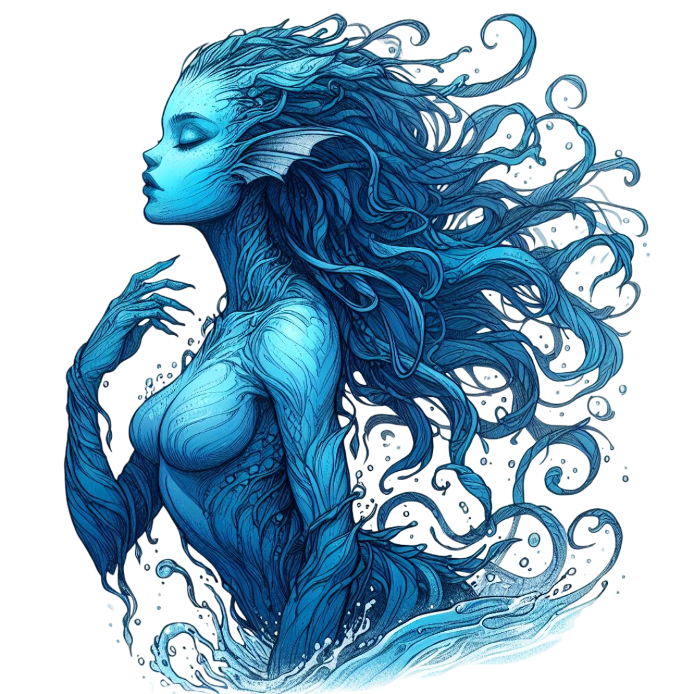
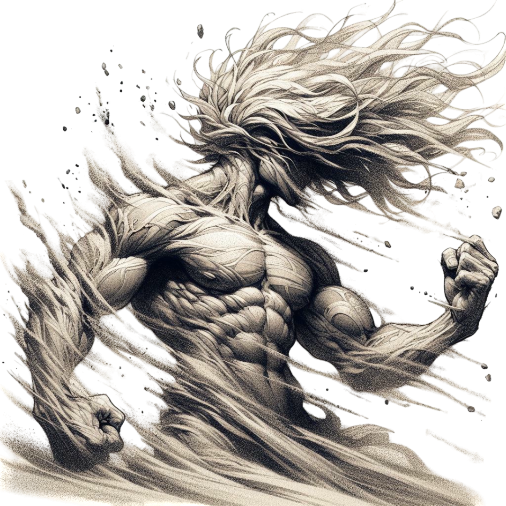
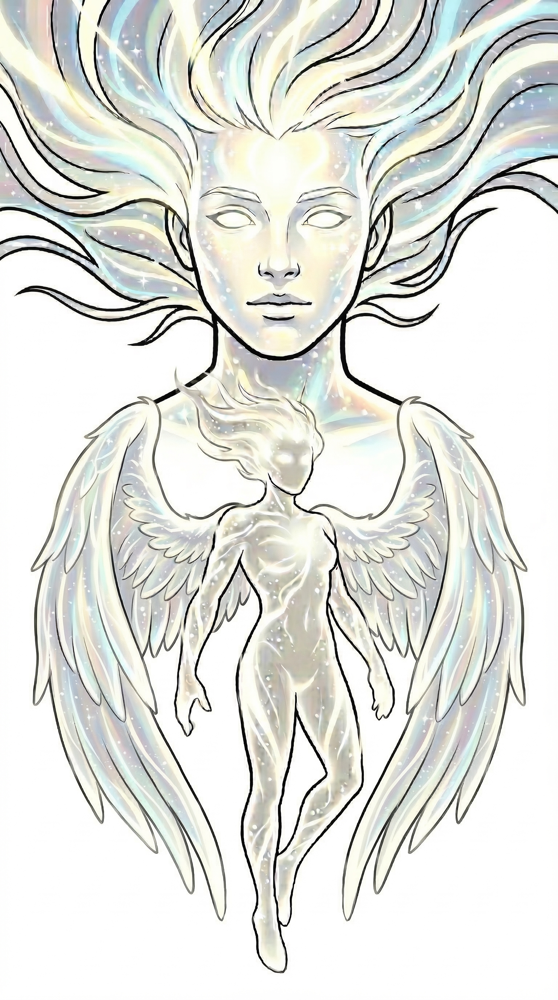
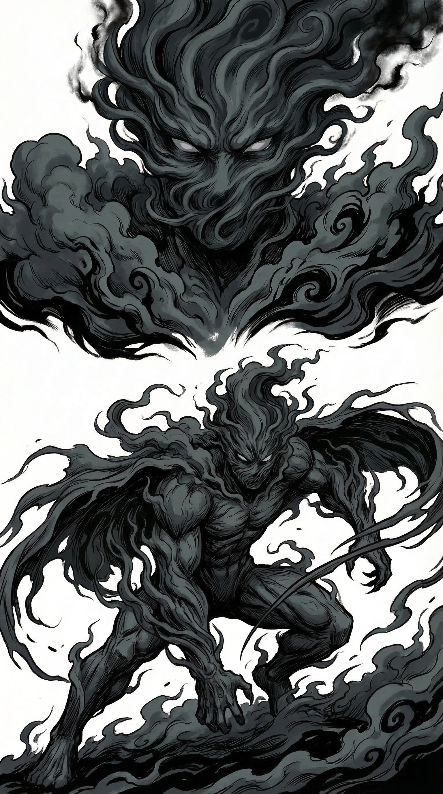
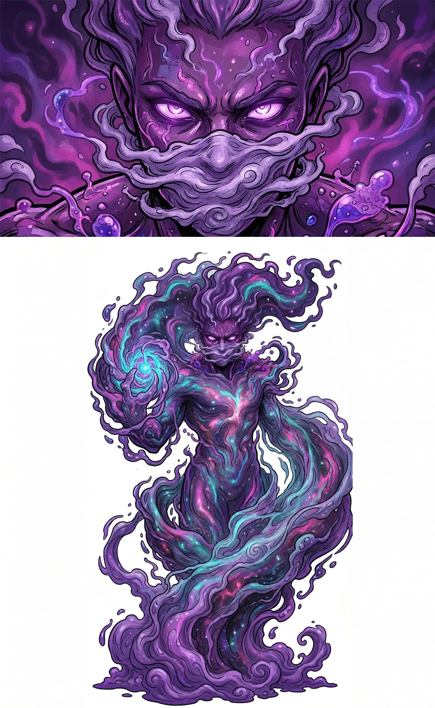

Sei eroi, sei elementi, un solo destino. Seleziona un Guardiano per scoprire la sua storia.
Sei eroi leggendari custodiscono l'equilibrio di Etherea. Ciascuno incarna un Elemento e possiede abilità straordinarie. Dal dominio della natura alle arti oscure delle pozioni — ogni Guardiano ha una storia da raccontare.
Seleziona un Guardiano per scoprire la sua scheda.

Guardiano della Foglia • Signore della Natura
[Testo segnaposto] Sylvaran nacque nel cuore della Grande Foresta Eterna, dove gli alberi parlano in lingue antiche e le radici celano segreti millenari. Fin dal primo respiro, la natura stessa lo riconobbe come proprio guardiano, cingendolo di un'aura di foglie luminose.
[Testo segnaposto] Con il suo Bastone delle Radici, Sylvaran può evocare barriere di rovi, guarire le ferite dei compagni con linfe magiche e comandare agli spiriti boschivi di guidare la squadra attraverso i labirinti più intricati. La sua presenza accelera la crescita delle piante alleate e indebolisce le creature oscure che temono la luce verde.
[Testo segnaposto] Il punto debole di Sylvaran è il fuoco: le fiamme oscure dei nemici riducono drasticamente le sue capacità magiche. Tuttavia, in presenza di acqua alleata, diventa quasi invincibile.

Guardiano delle Acque • Signore delle Correnti
[Testo segnaposto] Marevir è antichissimo quanto il primo oceano. Nacque da una goccia dell'Acqua Primordiale che scorreva prima ancora che il mondo avesse forma definitiva. La sua voce risuona come onde sugli scogli, e il suo sguardo ha la profondità degli abissi insondabili.
[Testo segnaposto] Marevir può creare barriere liquide, lanciare getti d'acqua potentissimi e purificare aree contaminate dalla corruzione. Sul tabellone, i suoi movimenti raddoppiano su caselle acquatiche e può attraversare ostacoli che bloccherebbero altri Guardiani grazie alla sua natura fluida.

Guardiana della Terra • Plasmastrice di Monti
[Testo segnaposto] Aurantha è una forza granitica e immutabile. Nata dall'incontro di magma e cristallo nelle profondità della Montagna Eterna, porta nel suo corpo venature dorate che brillano come filoni d'oro. La terra obbedisce alla sua voce come un fedele alleato.
[Testo segnaposto] Aurantha può erigere muri di pietra istantanei, creare terremoti localizzati per stordire i nemici e aprire passaggi sotterranei segreti. È la più resistente tra tutti i Guardiani, capace di assorbire danni devastanti senza cedere.

Guardiano della Luce • Portatore dell'Alba
[Testo segnaposto] Luminael è l'incarnazione della speranza. Il suo corpo emette un bagliore argenteo visibile anche nelle tenebre più profonde, e la sua presenza infonde coraggio nei compagni e terrore nelle creature oscure. Visse per millenni tra gli dei della luce prima di discendere a proteggere Etherea.
[Testo segnaposto] Luminael può rivelare percorsi nascosti illuminando il labirinto, purificare compagni dalla corruzione e lanciare raggi di luce pura che infliggono danni massicci alle entità dell'ombra. È il supporto ideale del gruppo, capace di ribaltare situazioni disperate.

Guardiana delle Tenebre • Signora dei Confini
[Testo segnaposto] Umbra è forse la più incompresa tra i Guardiani. Molti la temono, scambiando il suo dominio sulle ombre per malvagità. In realtà, è lei che impedisce alle anime perdute di vagare senza meta e che mantiene il confine tra i vivi e i morti. Senza di lei, Etherea sarebbe invasa da spettri.
[Testo segnaposto] Umbra si muove attraverso le ombre senza essere vista, può indebolire i nemici rubando la loro energia vitale e comunicare con le anime degli antichi Guardiani per ottenere preziose informazioni. La sua tattica preferita è colpire dove nessuno si aspetta, usando il buio come sua armatura invisibile.

Guardiano delle Pozioni • Alchimista Arcano
[Testo segnaposto] Venenix è l'enigma vivente tra i Guardiani. Nessuno conosce con certezza le sue origini, e lui non lo svela mai. Sa distillare dalle sostanze più comuni pozioni di potere straordinario — veleni che corrompono i nemici, antidoti che riportano in vita compagni caduti, elisir che amplificano le capacità di chiunque li beva.
[Testo segnaposto] Il suo approccio alla battaglia è puramente strategico: raramente affronta il nemico di petto, preferendo alterare le condizioni del campo con le sue concozioni. Una sola fiala del suo Veleno dell'Oblio può rendere inutilizzabile un intero corridoio del labirinto per tre turni.